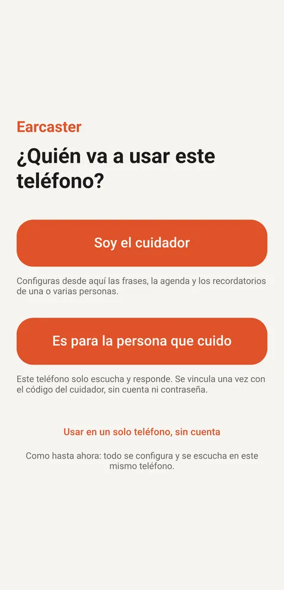

1 2 3
Al abrir la app
¿Quién va a usar este teléfono?
La primera vez, la app pregunta para quién es.
- 1Soy el cuidador. Entras con tu correo y una contraseña, y añades a las personas que cuidas. Antes de crear la cuenta, la app explica qué se guarda en la nube.
- 2Es para la persona que cuido. El teléfono solo escucha y responde. Se vincula una vez con el código del cuidador, sin cuenta ni contraseña.
- 3Usar en un solo teléfono, sin cuenta. Como en las versiones anteriores: todo se configura y se escucha en el mismo teléfono. En este modo no está Clara.